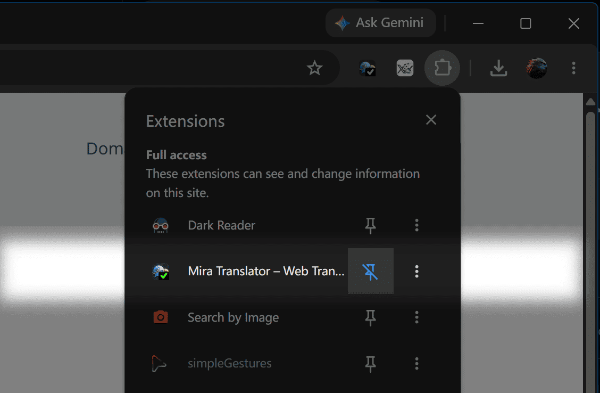

Last step: Pin Mira to your toolbar
Keep Mira within easy reach by pinning it to your browser toolbar.
Chrome
ONE QUICK STEP

The browser screenshot is not available.
Pin Mira
Open the Extensions menu, then click the pin icon next to Mira.